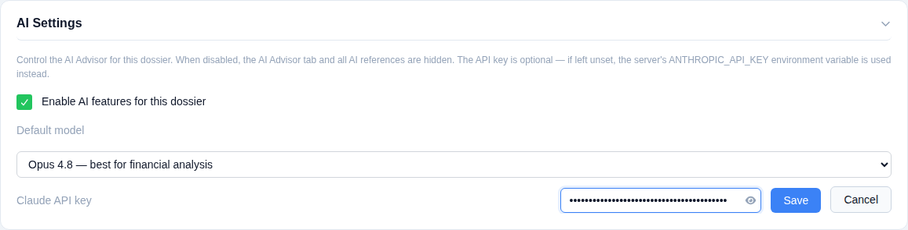
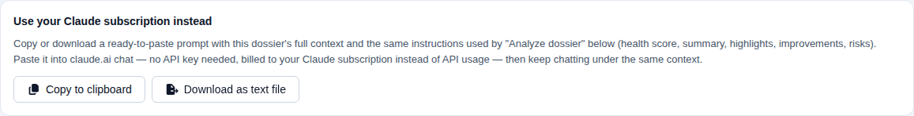
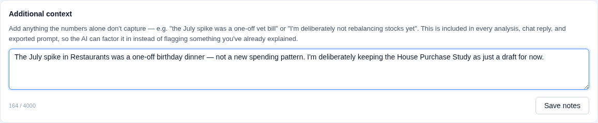
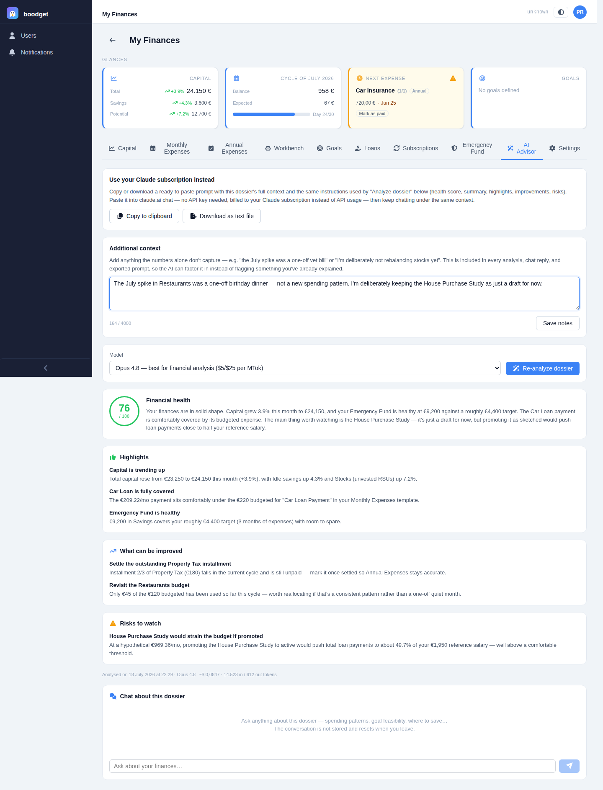
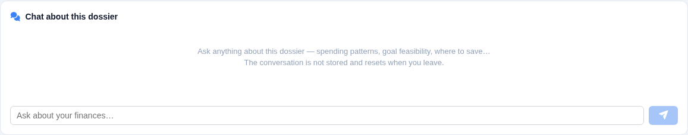
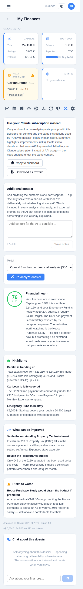

Getting a second opinion from the AI Advisor
An opt-in tab that sends a trimmed, no-account-numbers snapshot of a dossier to Claude and asks for a plain-language financial health check — or lets you chat about it directly. It's entirely optional, entirely per-dossier, and never runs without being asked to. This page walks through setting it up and using it, step by step.
In Settings → AI Settings, the whole feature is gated behind one checkbox — when off, the AI Advisor tab doesn't render at all anywhere in the dossier, and the backend independently refuses every AI request regardless of what the frontend shows. Pick a default model (cost and capability trade-offs are spelled out right in the dropdown), and optionally set a Claude API key for this dossier specifically — it's write-only, masked, and never sent back to the browser once saved. Leave it blank and the app falls back to an operator-wide key set in the environment, if one exists.

No key, no problem. The "Use your Claude subscription instead" card is always available, key or not: it copies or downloads the exact same dossier context and analysis instructions as a self-contained prompt, ready to paste into claude.ai chat and billed to your existing Claude subscription instead of API usage. Every AI response elsewhere in the tab also shows a cost estimate, so if you do use a key, you always know what it's spending.

Raw numbers don't know that July's spike was a one-off vet bill, or that you're deliberately not rebalancing stocks yet. The Additional context box is where you say so once — it's saved per dossier and folded into every analysis, chat reply, and exported prompt from then on, with the model explicitly instructed to give it real weight rather than flag something you've already explained.

Click Analyze dossier and the model returns a structured assessment: a health score out of 100, a short summary, a handful of highlights, concrete improvements, and any risks — each grounded in real figures from the dossier (an account name, a specific month, an actual euro amount), not generic advice. It factors in loans, subscriptions linked to distributions, the emergency fund, goals, and even your own Workbench plans. The result is saved — reopening the tab later shows the same analysis until you re-run it.

Below the analysis, a chatbox answers free-form questions using the same dossier snapshot as context — "can I afford to promote that draft loan?", "which distribution is closest to its limit?". The conversation is ephemeral by design: it lives only in the browser tab, isn't saved anywhere, and starts fresh every time you leave and come back.

